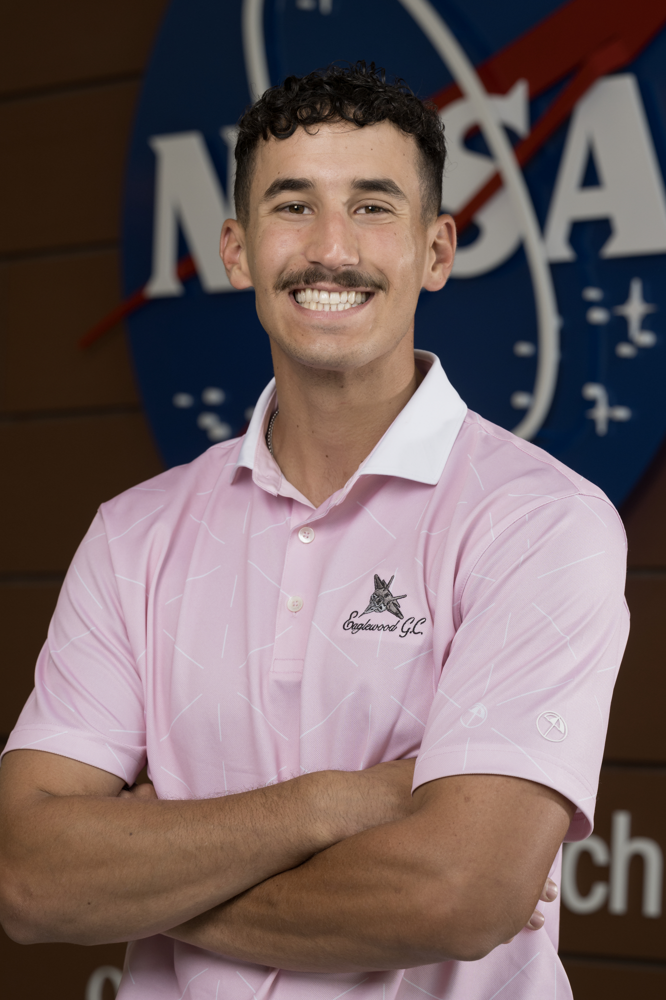

Nicholas
Georgiou
Originally from good ol' Olathe, Kansas — born, raised, and perpetually sunburned. I graduated from The University of Kansas in '25 with a B.S. in Engineering Physics.
Apart from academics, I have a variety of hobbies. Whether it's teeing off on the golf course, carving down snowy slopes, catching waves, or trekking through the mountains, I love sharing these experiences with friends and family while embracing the outdoors. For some highlights, check out my Adventures page.
Undergraduate Journey
Sophomore Year · Summer 2023
Undergraduate Researcher
Cooperative Unmanned Systems Lab · University of Kansas
My research journey began at Dr. Chao's Cooperative Unmanned Systems Laboratory (CUSL), where I focused on developing high-frequency RPM data logging systems and dynamic thrust models for Unmanned Aerial Systems (UAS). The objective was to better capture thrust data during controlled fire burns, specifically when the UAS interferes with fire plume clouds.
This exposed me to flight computer firmware, where I modified and implemented custom code for my proposed system. Shoutout Mosarruf and Zhenghao for being my first ever mentors!
Junior Year · Spring & Summer 2024
Composites Engineering Intern
NASA Langley Research Center · Advanced Materials & Processing Branch
I joined NASA Langley Research Center, where I fabricated composite wingboxes, implemented adhesive-free bonding techniques, and conducted ultrasonic testing for non-destructive evaluation. My work extended to designing and machining composite molds and synchronizing in-situ ultrasonic scan data with autoclave cure cycles.
Senior Year · Summer 2025
Return of the Composites Engineer
NASA Langley Research Center · Advanced Materials & Processing Branch
I returned to NASA Langley to work on calibrating a thermal IR camera to improve temperature measurement accuracy for laser-assisted Automated Fiber Placement (AFP). I learned how material properties and surface finishes impact emissivity, and updated the camera software to account for those changes.
Shoutout Finn, Joseph, Tyler, Wilfredo, and Henry for everything!
Final Semester · Fall 2025
PCB Design Intern
Malmoset · Lenexa, Kansas
My pops found me a small shop called Malmoset where I learned KiCad and helped lay out 4-layered boards for custom camera designs. This sparked my interest in hardware design and led me to building my own custom flight controller — check out my Projects page for details.
Shoutout Reid Crowe for being an amazing mentor!